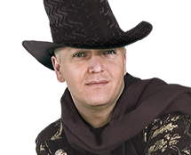
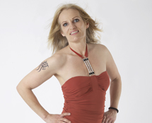
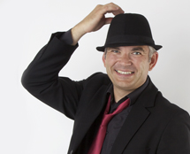
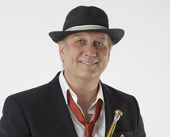
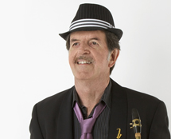

Vocals - KC O 'Douwd

Downtown meets KC O `Douwd
Ich liebe es Musik und Rhythmus mit einer Live Band zu genießen. Seit 15 Jahren mache ich Musik in verschiedenen Projekten. Gearbeitet habe ich mit den Weather Girls und Keith Tynes und alles war und ist immer ein absoluter Genuss der auf die Unterhaltung der Zuhörer ausgerichtet war und ist. Tanz und Entspannung, liebe zur Musik sind Motivatoren für mein Sein. Dowtown ist ein Mix aus Herz und Seele für die Musik. Neue und spannende Zusammenarbeit erwartet die Zuhörer. Ich bin mit Leib und Seele für die Musik und für die Menschen on Stage. Let`s Rock!
Ich liebe es Musik und Rhythmus mit einer Live Band zu genießen. Seit 15 Jahren mache ich Musik in verschiedenen Projekten. Gearbeitet habe ich mit den Weather Girls und Keith Tynes und alles war und ist immer ein absoluter Genuss der auf die Unterhaltung der Zuhörer ausgerichtet war und ist. Tanz und Entspannung, liebe zur Musik sind Motivatoren für mein Sein. Dowtown ist ein Mix aus Herz und Seele für die Musik. Neue und spannende Zusammenarbeit erwartet die Zuhörer. Ich bin mit Leib und Seele für die Musik und für die Menschen on Stage. Let`s Rock!
Vocals - Anja Huerga

„Im Duett mit KC und dem Backgroundchor der Musiker bekomme ich Gänsehaut“
Kaum konnte ich laufen uns sprechen, habe ich angefangen meine Umgebung mit meinem Gesang zu nerven. Die Liebe zum Gesang hat sich im Laufe meines Lebens nur noch verstärkt. Mit 37 Jahren habe ich eine Rockband gegründet. 6 Jahre war ich die Frontsängerin und konnte viel Erfahrung sammeln. Ich finde bei „DOWNTOWN“ den Mix zwischen Lead- und Backgroundvocals. Durch unsere musikalische Weiterentwicklung und intensiven Gesangsunterricht wagen wir uns auch an komplexere Songs. Es macht so richtig Spass.“
Kaum konnte ich laufen uns sprechen, habe ich angefangen meine Umgebung mit meinem Gesang zu nerven. Die Liebe zum Gesang hat sich im Laufe meines Lebens nur noch verstärkt. Mit 37 Jahren habe ich eine Rockband gegründet. 6 Jahre war ich die Frontsängerin und konnte viel Erfahrung sammeln. Ich finde bei „DOWNTOWN“ den Mix zwischen Lead- und Backgroundvocals. Durch unsere musikalische Weiterentwicklung und intensiven Gesangsunterricht wagen wir uns auch an komplexere Songs. Es macht so richtig Spass.“
Drums - Michael Palotas

„Bands im Stil von DOWNTOWN faszinieren mich. Eine groovige Rhythmusgruppe, gepaart mit einem Bläsersatz und zwei richtig guten Sängerinnen- das ist noch handgemachte Musik und genau dass, was mir Spass macht“
Schlagzeug spiele ich seit über 25 Jahren. Gespielt habe ich so ziemlich alle Arten von Musik, die es gibt. Angefangen vom traditionellen Blasorchester, über Klassik, Swing und Dixieland zu Big Band und Rock. Ich hatte das Glück während meiner Militärzeit fast 2 Jahre lang nur Musik machen zu dürfen. Dies war eine extrem wertvolle Erfahrung und ich konnte mich musikalisch sehr viel weiter entwickeln.
Schlagzeug spiele ich seit über 25 Jahren. Gespielt habe ich so ziemlich alle Arten von Musik, die es gibt. Angefangen vom traditionellen Blasorchester, über Klassik, Swing und Dixieland zu Big Band und Rock. Ich hatte das Glück während meiner Militärzeit fast 2 Jahre lang nur Musik machen zu dürfen. Dies war eine extrem wertvolle Erfahrung und ich konnte mich musikalisch sehr viel weiter entwickeln.
Keyboards - Rainer Eggenberger

„Nie wollte ich Klavier spielen, viel lieber war mir Saxophon. Aber meine Tante, die Klavierlehrerin war, brachte mir die Tasten näher. Und dabei blieb es auch"
Angefangen hat alles damit, dass ich mit ca. 7 Jahren klassischen Klavierunterricht bei meiner Tante erhielt. Mit 18 war ich in der ersten Band „THE KROWN“, welche eine Lokalgrösse in Zürich-Schwammendingen war. Nach 4 Jahren wechselte ich in eine grössere Band, welche „BIG TOWN SET“ hiess und blieb da sagenhafte 30 Jahre. Bei DOWNTOWN werde ich so richtig gefordert und mit den beiden Sängerinnen Anja und Tamara ergeben sich unglaubliche musikalische Möglichkeiten.“
Angefangen hat alles damit, dass ich mit ca. 7 Jahren klassischen Klavierunterricht bei meiner Tante erhielt. Mit 18 war ich in der ersten Band „THE KROWN“, welche eine Lokalgrösse in Zürich-Schwammendingen war. Nach 4 Jahren wechselte ich in eine grössere Band, welche „BIG TOWN SET“ hiess und blieb da sagenhafte 30 Jahre. Bei DOWNTOWN werde ich so richtig gefordert und mit den beiden Sängerinnen Anja und Tamara ergeben sich unglaubliche musikalische Möglichkeiten.“
Trumpet - Kurt Liniger

„Es war Schon immer mein Wunsch, ein Blasinstrument spielen zu können, es ist faszinierend, den Klang selber zu erzeugen und zu formen“
Angefangen hat alles im Alter von 11 Jahren und dem Blasunterricht bei der Knabenmusik Schlieren. Nach dem Es-Horn habe ich auf die Trompete gewechselt, weil dies immer mein Trauminstrument war und bis Heute geblieben ist. Später wechselte ich zur Stadtmusik Zürich, welche unter der Leitung von HANS MÖCKEL und KURT BROGLI stand. DOWNTOWN differenziert sich durch gut arrangierte Bläsersätze, welche wir mit richtigen Instrumente und nicht durch Synthersizer-Ersatz verkörpern. Wir sind in dieser Besetzung die optimale Band, da wir uns in einem breiten musikalischen Spektrum bewegen können.
Angefangen hat alles im Alter von 11 Jahren und dem Blasunterricht bei der Knabenmusik Schlieren. Nach dem Es-Horn habe ich auf die Trompete gewechselt, weil dies immer mein Trauminstrument war und bis Heute geblieben ist. Später wechselte ich zur Stadtmusik Zürich, welche unter der Leitung von HANS MÖCKEL und KURT BROGLI stand. DOWNTOWN differenziert sich durch gut arrangierte Bläsersätze, welche wir mit richtigen Instrumente und nicht durch Synthersizer-Ersatz verkörpern. Wir sind in dieser Besetzung die optimale Band, da wir uns in einem breiten musikalischen Spektrum bewegen können.
Saxophone - Hermann Spalinger

„Musik ist mein ständiger Begleiter“
Schon als kleiner Junge spielte ich Klarinette in der Jugendmusik Zürich. Mit 18 Jahren spielte ich in der ersten Band und wir hatten schon regelmässig öffentliche Auftritte. Später spielte ich in verschiedenen Orchestern wie: „TEDDY KUNZ“, „RENATO BUI“ und „BIG TOWN SET“. Toll finde ich bei „DOWNTOWN“, dass wir moderne groovende Musik spielen und ein tollen Sound haben, mit welchem wir den Geschmack des Publikums optimal treffen.
Schon als kleiner Junge spielte ich Klarinette in der Jugendmusik Zürich. Mit 18 Jahren spielte ich in der ersten Band und wir hatten schon regelmässig öffentliche Auftritte. Später spielte ich in verschiedenen Orchestern wie: „TEDDY KUNZ“, „RENATO BUI“ und „BIG TOWN SET“. Toll finde ich bei „DOWNTOWN“, dass wir moderne groovende Musik spielen und ein tollen Sound haben, mit welchem wir den Geschmack des Publikums optimal treffen.